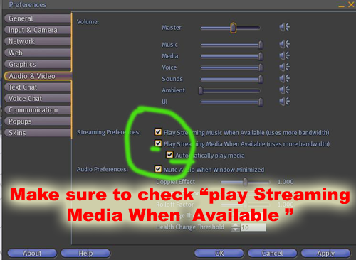

COMPATIBILITY NOTE
Please read this!
There have been several reported problems with the SLOODLE Presenter on SL Viewer 2. We apologise for any inconvenience, and hope to fix it soon.
Summary
The SLOODLE presenter is a tool for creating presentations (for lecture, seminar or self-paced tutorial use) in Second Life. The presenter avoids the requirement to upload images into Second Life and allows presentations to combine images, web-pages and videos by streaming the presentation content into Second Life using the media settings.
As it uses the parcel media settings, the presenter must be owned by the land owner - or deeded to the land owning group where the land is group owned.
Presentations can be viewed in Second Life and/or in Moodle itself. The presenter can be set to allow any avatar - or only the owner - to control the presentation using the forward and back buttons.
Setting up the Presenter
To setup the presenter:
- Create a Presenter Activity on your moodle website
- Create your slideshow, by adding images, or webpages, or videos as links in the bottom section
- once complete, rez a presenter in Second Life
- Click on it, to authenticate it with your moodle website
- Once its been authenticated, click on the presenter again, to download the saved configuration
- If the land is owned by a group, you must deed the presenter to that group
- Once the Presenter has been deeded, it will automatically set the parcel media texture to the texture named "sloodle_presenter_texture" in it's inventory after 5 minutes. If you don't want to wait 5 minutes for it to check if it has been deeded or not, you can just touch the Presenter for it to jump to the next step.
- Now your presenter is ready.
- Press play on your media settings.
- You should now be able to see your presentation
NOTE
To view the presentation in Second Life, your users MUST have quicktime installed. They can do so here: [1]
Videos
Tutorial
Promo
Transcribed Text:
As an educator in Second Life, or Open sim, you'll soon find that you need a tool for reliably reating and presenting mixed media presentations. usually this involves uploading a separate image for each of your PowerPoint or Keynote slides. this can be both costly and cumbersome. Most presentation tools in second life only display flat static images images. However, there are times, when maybe youd' like one or two slides to have video content. In other occasions, you might also want to display a webpage for your students - and there may even be a time when you'll need to access your presentation when Second Life has gone OFFLINE!!! These are all real-world considerations you'll have to make when deciding whether or not to bring your class into the Virtual World... Well folks, we have Good news.
Here at the SLOODLE Project, we've addressed all of these issues into one nice shiny little FREE and opensource package. It's called the SLOODLE Presenter! check this out -- On your moodle site, you can add compose your entire presentation for use in Second Life - you can add images, videos and even webpages! Once complete, you simply need to rez a presenter inworld, configure it to connect to your moodle site, deed it to the parcel the presenter is located on - and boom! A wonderful mixed media presenter awaits!
Getting the upload progress bars to display correctly - modifying your theme.css
In order to have the multiple file upload progress bars display correctly, you will have to modify one of your theme .css files. It's quite a simple modification, simply open your www.mysite.com/theme/mytheme/styles_layout.css and add the following code to the bottom of that file:
/* Default style definitions for: Uploadify v1.6.2 Copyright (C) 2009 by Ronnie Garcia Co-developed by Travis Nickels */ .fileUploadQueueItem { font: 11px Verdana, Geneva, sans-serif; background-color: #F5F5F5; border: 3px solid #E5E5E5; margin-top: 5px; padding: 10px; width: 300px; } .fileUploadQueueItem .cancel { float: right; } .fileUploadProgress { background-color: #FFFFFF; border-top: 1px solid #808080; border-left: 1px solid #808080; border-right: 1px solid #C5C5C5; border-bottom: 1px solid #C5C5C5; margin-top: 10px; width: 100%; } .fileUploadProgressBar { background-color: #0099FF; }
Setting up the Second Life Program
In order to view presentations that are being played on the presenter, you must make sure that the Second Life client (the Second Life program installed on your machine) is also set up correctly.
To Do this:
- Go to Edit -> Preferences (or press Control-P or Cmd-P)
- Click on the "Audio & video" tab. Make sure "Play Streaming Media when Available) is checked
- Once this is done, click "ok",  then
- Click Play on your Web Media button (right above the Inventory button which is at the bottom right corner of your Second Life Program)
- If you can't see anything on the presenter at this point, perhaps it hasn't been deeded to the parcel its standing on.
- Also, if you want to view quicktime movies on the presenter, you must have Quicktime installed on your machine.
{kind=link}
{kind=link}
Land Parcel Settings
In order to stream images,video, and webpages INTO Second Life, the Parcel's media texture must be set to the sloodle_presenter_texture.
Once the Presenter receives configuration and has been deeded, it will automatically set the parcel media texture of the land.
However, you can also do this manually by
- Edit the presenter by right clicking, choosing edit, then clicking on the More>> button, then clicking on the "Content" tab.
- Find the texture inside called: sloodle_presenter_texture

- Drag the sloodle_presenter_texture to your inventory
- Now, Click on World -> About Land
- Click on the "Media" tab
{kind=link}
- Then drag the sloodle_presenter_texture from the inventory onto the lands media settings
Once finished, press play on your web media!
Theming the Presenter
If you would like to change the default media texture, you can do so simply by deleting the sloodle_presenter_texture in the contents of the presenter, and copying your own texture into the Presenters Contents. You MUST however make sure, that your texture is named: "sloodle_presenter_texture"
If you would like the sloodle_presenter_texture to be named something different, fortunately, since Sloodle is Open source, it IS possible. Simply edit the sloodle_mod_presenter-1.0 lsl file which is located in the contents of the presenter. In the first 100 lines, you'll find a line which reads: string PRESENTER_TEXTURE="sloodle_presenter_texture"; Simply change this line to: string PRESENTER_TEXTURE="your_new_name";
Importer Plugins
PDF Importer
Since SLOODLE 1.0, the Presenter has had a feature to enable importing PDF documents into a slideshow which can be viewed in-world. This feature is not supported on all servers though. If you are having trouble, then please refer to "PDF Importer installation" for more details.
See Also
| This page is part of the SLOODLE documentation | |||
|---|---|---|---|
| Docs: Users | Administrators | Developers | |||
| Document Top Sloodle.org | |||